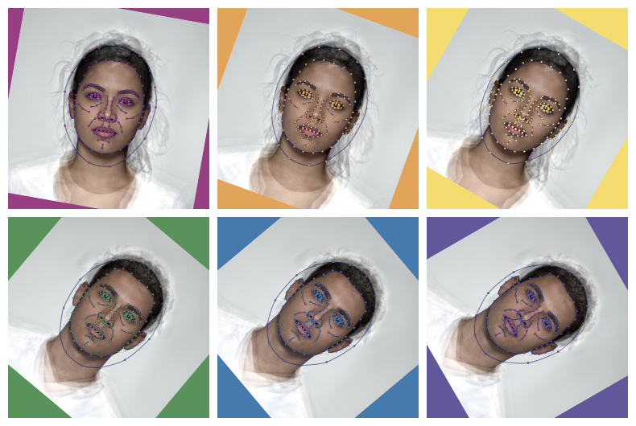

This vignette demonstrates the functions you can use to resize, rotate, crop, pad, and align images. Templates are also changed with the images.
# load packages and set maximum plot width
library(webmorphR)
library(webmorphR.stim) # for extra stimulus sets
wm_opts(plot.maxwidth = 850)Load your images
Load the demo stimuli, or read in your own images with
read_stim().
stimuli <- demo_stim()Resize
Resizing your images at the start of a chain can make everything go faster if you’re working with very large images, but can make the results blurry if you go too small.
Resized Images
You can set the resize dimensions by proportions or pixels. Numbers less than 10 are interpreted as proportions, so the code above resized the images to 0.1 of their original size. Numbers larger than 10 are interpreted as pixels.
Resized Images by pixel
If you set just with or just height, the other dimension is calculated proportionally to keep the aspect ratio.

Resized Images by height
If you set both width and height, you may alter the aspect ratio.
Resized Images by with and height
Rotate
Rotate images by degrees. Set the fill argument to fill
in the corners with a specific colour, or use patch = TRUE
to sample the colour from 10x10 pixel square at the top left corner.
Rotated Images and Templates
Horizontal Eyes
If you want to rotate each image by the amount that makes the eyes
horizontal, use horiz_eyes().
lisa <- load_stim_lisa()
lisa_horiz <- horiz_eyes(lisa, patch = TRUE)
c(lisa, lisa_horiz) |> plot(nrow = 2)Make eyes horizontal with horiz_eyes()
Crop
Crop images to a new width and height. You can specify sizes in proportions or pixels. Values < 2 will be interpreted as proportions.
Cropped images with default center cropping.
The x- and y-offsets default to NULL, which centres the cropping. You
can set the offsets to a proportion or pixel value and the cropping will
start there. The origin is the upper left corner, so setting
x_off = 0 starts the cropping from the left side, and
setting y_off = 0 starts the cropping from the top.
Cropped images with offsets.
Pad
Pad images with a border. Values less than 1 are interpreted as
proportions. Set the colour with fill, otherwise its value
defaults to the value of wm_opts("fill"), which is white
unless you reset it.
Padded images with the same value for each side.
Pad the top, right, bottom and left borders with different values, and set a different colour for each fill.
stimuli |>
pad(top = 10, right = 20, bottom = 30, left = 40,
fill = c("dodgerblue", "hotpink")) |>
plot()Padded images with different values for each side.
Or you can use the patch function to get the median
colour from a patch of the image. If you set patch to
TRUE, this will default to the top left 10 pixel
square.
rb <- load_stim_rainbow(1:8)
rb |>
pad(50, patch = TRUE) |>
plot(nrow = 2)Cropped images with background matched to top left 10-pixel square
Or you can set the boundaries of the patch manually. The code below sets the patch colour to the average colour from a 100x100-pixel square in the center of each image.
# get stimuli
# get center x and y coordinates of each image
cx <- width(rb)/2
cy <- height(rb)/2
r <- 50 # half-height of patch
rb |>
pad(50, patch = list(x1 = cx - r,
x2 = cx + r,
y1 = cy - r,
y2 = cy + r)) |>
plot(nrow = 2)Cropped Images with background matched to centre.
Crop to Template
You can use the crop_tem() function to get the minimum
and maximum x- and y-values from all of the image templates, then use
that to set the cropping. In the example below, the images are cropped
so there is 100 pixels of padding around the boundaries, calculated
across all images.
Set each to TRUE to calculate the boundaries separately
for each template in the list instead of the full set.
To Size
The functionto_size() combines crop and resize to get a
batch of images to the same size.
# create a few different sizes
s <- demo_stim()[1]
multisize <- c(
s,
s |> resize(.5),
s |> crop(0.6),
s |> crop(1, 0.8)
) |> pad(10, fill = "hotpink")A 10-pixel pink border has been added to these original images so you can see what has been cropped in the subsequent images.
The images created above, with their width and height.
The code below resizes each image to fit into a 300 x 400 pixel image and fills in any extra background with blue. You’ll probably choose your background colour for a real stimulus set, but this makes the demo clearer.
to_size()
Set keep_rels = TRUE to bring the largest image to fit
in the new size, resize the others proportionally, and pad.
to_size() with keep_rels = TRUE
Set crop = TRUE to resize all images until they cover
the new size and crop the “overhang”. There is no need to set the fill
color for padding when crop is TRUE.
to_size() with crop = TRUE
Set keep_rels = TRUE to bring the smallest image to
cover the new size, resize the others proportionally, and crop any
overhang.

Align
You can align a set of images on two points. By default, these are
the first two points in the template, which correspond to the left and
right eye in the standard FRL template, the 106-point Face++ templates,
and the dlib auto_delin() templates. For chaotic historical
reasons, the 83-point Face++ template has the eye points as 63 and 81
(pupils) or 57 and 50 (eye centre).
If you don’t set the x and y coordinates, the images will align to
the average value across the set. The value of fill will
fill in any borders from the rotation and cropping so the images stay
the same size as the originals.
Two-point alignment with align()
You can manually set the values for the x and y coordinates, as well as the resulting width and height of the images. These values must be in pixels.
stimuli |>
align(x1 = 350, y1 = 350, x2 = 450, y2 = 450,
width = 800, height = 800, patch = TRUE) |>
plot()Two-point alignment with align(); setting values manually
Instead of aligning to the average of all the images, you may want to
align to a reference image. Set ref_img to the index or
name of the chosen image.
aligned3 <- align(lisa, ref_img = "lisa3", patch = TRUE)
plot_rows(
"Original images" = lisa,
"Aligned to image 3" = aligned3,
top_label = TRUE
)
Align images to a reference image.
You can align images to a single point by setting pt1 and pt2 the same. For example, the tip of the nose is point 80 in this template, so the following code moves the tip of the nose of all images to the average position, but doesn’t resize or rotate any of the images.
One-point alignment.
Procrustes Align
You can set the procrustes argument to TRUE to use Procrustes
analysis to align the images and templates to fit the average shape
(or a reference image) as closely as possible.
Procrustes alignment.
Currently, webmorph does not have this capability, but you can download your images and tems, procrustes align them with the R package, save the images and templates, and upload them back to webmorph.
Repeating images
You can use rep() to repeat images in a stimuli. Here,
we repeat the faces 3 times each, apply 6 different rotations with
different background colours, crop them to the same size, and plot them
with 6 different template point colours.
rainbow <- c(pink = "#983E82",
orange = "#E2A458",
yellow = "#F5DC70",
green = "#59935B",
blue = "#467AAC",
purple = "#61589C")
stimuli |>
resize(0.5) |>
rep(each = 3) |>
rotate(seq(10, 60, 10), fill = rainbow) |>
crop(250, 250, fill = rainbow) |>
draw_tem(pt.color = rainbow, pt.alpha = 1, pt.size = 3) |>
plot(nrow = 2)
Image functions
You can do so many things with the {magick} package that is installed
with {webmorph}. The function image_func() is just a
convenient wrapper that allows you to apply {magick} functions (or any
other function that takes a magick image as the first argument) to each
image in a stimulus list.
stimuli <- demo_stim("test", "m_")
imglist <- c(
image_func(stimuli, "blur", radius = 10, sigma = 5),
image_func(stimuli, "charcoal", radius = 5, sigma = 2),
image_func(stimuli, "oilpaint", radius = 5),
image_func(stimuli, "implode", factor = 0.25),
image_func(stimuli, "implode", factor = -0.25),
image_func(stimuli, "negate"),
# canny edge detection format is {radius}x{sigma}+{lower%}+{upper%}
image_func(stimuli, "canny", geometry = "0x1+10%+30%"),
image_func(stimuli, "edge", radius = 2),
image_func(stimuli, "modulate", brightness = 80),
image_func(stimuli, "modulate", brightness = 120),
image_func(stimuli, "modulate", saturation = 0),
image_func(stimuli, "modulate", saturation = 110)
)
labs <- c("Blur", "Charcoal", "Oilpaint", "Implode",
"Explode", "Negate", "Canny", "Edge",
"20% Darker", "20% Brighter", "Greyscale", "Saturated")
imglist |>
pad(40, 0, 0, 0, fill = "dodgerblue3") |>
label(labs, color = "white") |>
plot(nrow = 3)The possible {magick} functions are listed by
image_func_types(). Check the magick package help for more
info on each (e.g., ?magick::image_oilpaint.
image_func_types()
#> [1] "annotate" "apply" "average" "background"
#> [5] "blur" "canny" "channel" "charcoal"
#> [9] "colorize" "combine" "composite" "contrast"
#> [13] "convert" "convolve" "despeckle" "edge"
#> [17] "emboss" "enhance" "equalize" "fill"
#> [21] "flatten" "fuzzycmeans" "fx" "fx_sequence"
#> [25] "implode" "lat" "level" "map"
#> [29] "median" "modulate" "morphology" "motion_blur"
#> [33] "negate" "noise" "normalize" "oilpaint"
#> [37] "ordered_dither" "page" "quantize" "reducenoise"
#> [41] "repage" "separate" "set_defines" "shade"
#> [45] "strip" "threshold" "transparent"This script took 0.3 minutes to render all the included images from scratch.